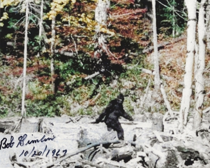

library(tidytuesdayR)
library(ggplot2)
library(tidyr)
library(dplyr)
library("maps")
if(!file.exists("bigfoot_data.RDS")) {
bigfoot_data <- tt_load('2022-09-13')
bigfoot <- bigfoot_data$bigfoot
saveRDS(bigfoot, file = "bigfoot_data.RDS")
}
bigfoot <- readRDS("bigfoot_data.RDS")Bigfoot

Here are some of the libraries I used in this analysis.
Bigfoot has eluded cryptid hunters for decades now. The goal of this analysis is to help locate Bigfoot, with the intended audience being Bigfoot enthusiasts and other cryptid hunters. The question I’m hoping to answer is: Where is Bigfoot most likely to be spotted?
This data comes from the Tidy Tuesday (Tidy Tuesday). The original data comes from the Bigfoot Field Researchers Organization. The data dictionary is located here (Bigfoot Field Researchers Organization).
Warning
Bigfoot is not real.
Seasons
weather <- bigfoot %>%
select(season, visibility) %>%
replace_na(list(season = "Unknown")) %>%
drop_na()
ggplot(weather, aes(x = factor(season, c("Spring", "Summer", "Fall", "Winter", "Unknown")))) +
geom_bar() +
#facet_wrap(~precip_type) +
labs(x = "Season",
y = "Number of Sightings",
title = "Number of Bigfoot Sightings by Season")
Here we see the seasons where Bigfoot was seen the most. It’s clear that Bigfoot sightings were greatest in the summer and fall seasons, while they were lowest in the winter and spring. This suggests that Bigfoot prefers warmer seasons, or hiberates through the winter.
Location
location <- bigfoot %>%
distinct() %>%
select(latitude, longitude, state) %>%
filter(state != "Alaska", state != "Hawaii") %>%
drop_na()
MainStates <- map_data("state")
ggplot() +
geom_polygon(data=MainStates, aes(x=long, y=lat, group=group),
color="black", fill="lightblue" ) +
geom_point(data = location, aes(x = longitude, y = latitude), size = 1,
shape = 23, fill = "darkred") +
coord_sf(xlim = c(-123, -69), ylim = c(25, 50)) +
labs(x = "Longitude",
y = "Latitude",
title = "Bigfoot Sighting Locations in the Continental United States")
Here we see the locations of the various sightings around the United States. Most sightings seem to congregate along the coasts.
It’s clear from the map that Bigfoot (or the Bigfoot population) can be found all over the country.
Bigfoot Over Time
sighting_date <- bigfoot %>%
select(date, classification) %>%
rename(class = classification) %>%
drop_na()
ggplot(sighting_date, aes(x = date)) +
geom_histogram() +
facet_wrap(~class) +
labs(x = "Date",
y = "Counts of Bigfoot Sightings",
title = "Bigfoot Sightings Over Time by Sighting Classification")`stat_bin()` using `bins = 30`. Pick better value with `binwidth`.
Finally see have Bigfoot sightings over time split up by classification. Class A sightings are where the sightings are clear and where it’s difficult to mistake Bigfoot for another animal. Class B sightings are sightings that occur from a distance and did not offer a clear view, but are still confidently Bigfoot. Class C sightings are second-hand and third-hand reports of Bigfoot and may be inaccurate. We see that Most sightings are Class A and B.
Note
Many have claimed that evidence of Bigfoot sightings have gone down, especially with the improvement of cameras and the internet which has made it harder to fake blurry photos. It’s clear from this graph that this is not the case. In fact, Bigfoot sightings have increased over time!
Summary
These graphs and charts give better idea of what kind of creature Bigfoot is and when and where to find it. From the first chart, Bigfoot seems to be a creature that enjoys warmer weather. It may even hibernate through the winter. The map plot indicates that Bigfoot is more likely to be found along the coasts, possibly along areas with more trees and forest. Finally, the third graph indicates that Bigfoot was not just a fluke from blurry photographs, but is indeed still present in the current day with many clear sightings.
Functions Used
tidyr
select()
replace_na()
drop_na()
dplyr
distinct()
rename()
ggplot2
geom_bar()
geom_polygon()
geom_point()
geom_histogram()
References
Mangan, Dan. “He Got the FBI to Test ’Bigfoot’ Hair in the 1970s — and This 93-Year-Old Man Is Still Searching for Sasquatch.” CNBC, June 2019, https://www.cnbc.com/2019/06/05/fbi-tested-bigfoot-hair-in-1970s-government-documents-show.html.